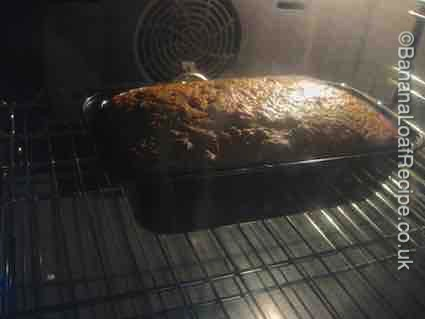
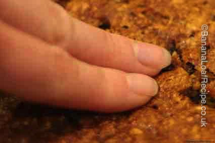
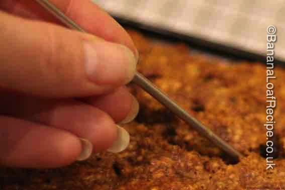
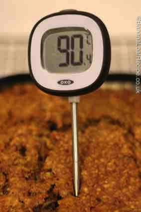

The home of easy and delicious banana loaf recipes and a wealth of articles to answer all your banana loaf baking needs.
It can be hard to bake a cake to perfection, particularly a cake that cooks for a longer period of time, like a banana loaf cake. Ovens vary enormously and a cake that may be done in 50 minutes in one oven may take 65 in another. You do not want a cake to still be liquid when you cut it open, but you don't want it to be as dried out as a biscuit.
Many people follow cake recipe timings and then pull the cake out of the oven on the dot of when the recipe tells them to. But when baking a cake, it is important to carefully observe and then check the cake, before declaring it cooked. You can put a cake back for a bit longer if it needs it. So, how do you know if your cake is cooked by the time that pinger goes ping?
It’s often overlooked, but a cook’s nose is a very useful tool. If you’re cooking something in the oven, the first indication that you have that it might be quite far along in the cooking process is that you can smell it. Your nose won’t tell you if your cake is perfectly risen and ready to take out of the oven. But if you’re busy doing something else and catch the aroma of your baking cake in the air, it might be time to walk over to the oven and take a look through the glass.
Don’t open the door yet! First, look through the door. Put the oven light on, if it’s not on already, and observe your cake through the glass. Has it risen? Has it darkened in colour, to golden brown or dark brown, depending on the ingredients. Is the cake pulling away from the sides of the tin or paper? Does it look like the picture accompanying the recipe?!

If your observations through the oven door lead you to believe that the cake might be cooked, you can GENTLY open the oven door and carefully remove the cake (use appropriate oven gloves, obviously). Place the tin delicately on a heat-proof surface - do not bang it down or you will risk the cake collapsing.
If your loaf cake is a fairly light recipe - a sponge-type, for example, you can touch the surface of the cake quickly, lightly and gently with your fingertips. Be careful - the cake is hot! If the surface feels firm and springy under your touch and you leave no indentation with your fingers, then the cake is most likely cooked. If the cake does not spring back but, instead, you leave an impression in the surface of the cake, it is probably not cooked.

The most often advised method of telling if a cake is cooked is to stick a small thin object, such as toothpick, cocktail stick, skewer or even a fork, into the middle of the cake.

If the item comes back out clean, then the cake is cooked. A few small, light crumbs are ok, but any batter or cake mixture, such as in the image below, means the cake is still raw in the middle.
Be careful, however, if you have any “bits” in your cake - such as chocolate drops, fruit, etc. When a skewer hits these, it will come back out with melted chocolate or fruit on it and this could mislead you. Try to make sure you have tested the cake not the added extras.
If you still don’t feel confident having used your own senses of smell, sight and touch, then you may wish to buy an instant-read thermometer (such as a meat thermometer) to check your cake. You can insert this heat sensitive instrument into the cake as you would a skewer - a reading of approx 90 degrees C or 195 degrees F is what you will be looking for with most loaf cakes combined with the probe coming out clean. However, in our opinion, the other steps above are better than relying on a gadget.

Visit our article How to bake the perfect loaf cake - 12 tips for success for help with baking the perfect cake, including what to do if your cake is not cooked when that pinger goes ping.